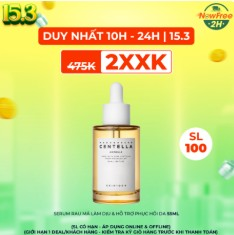
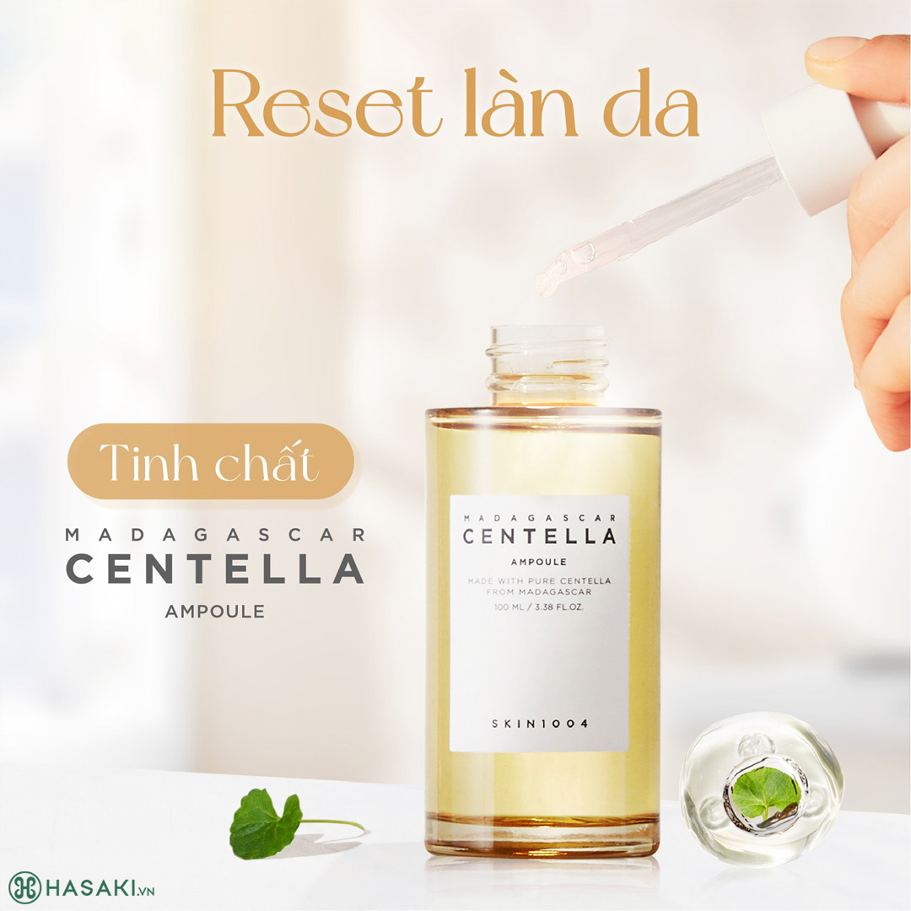
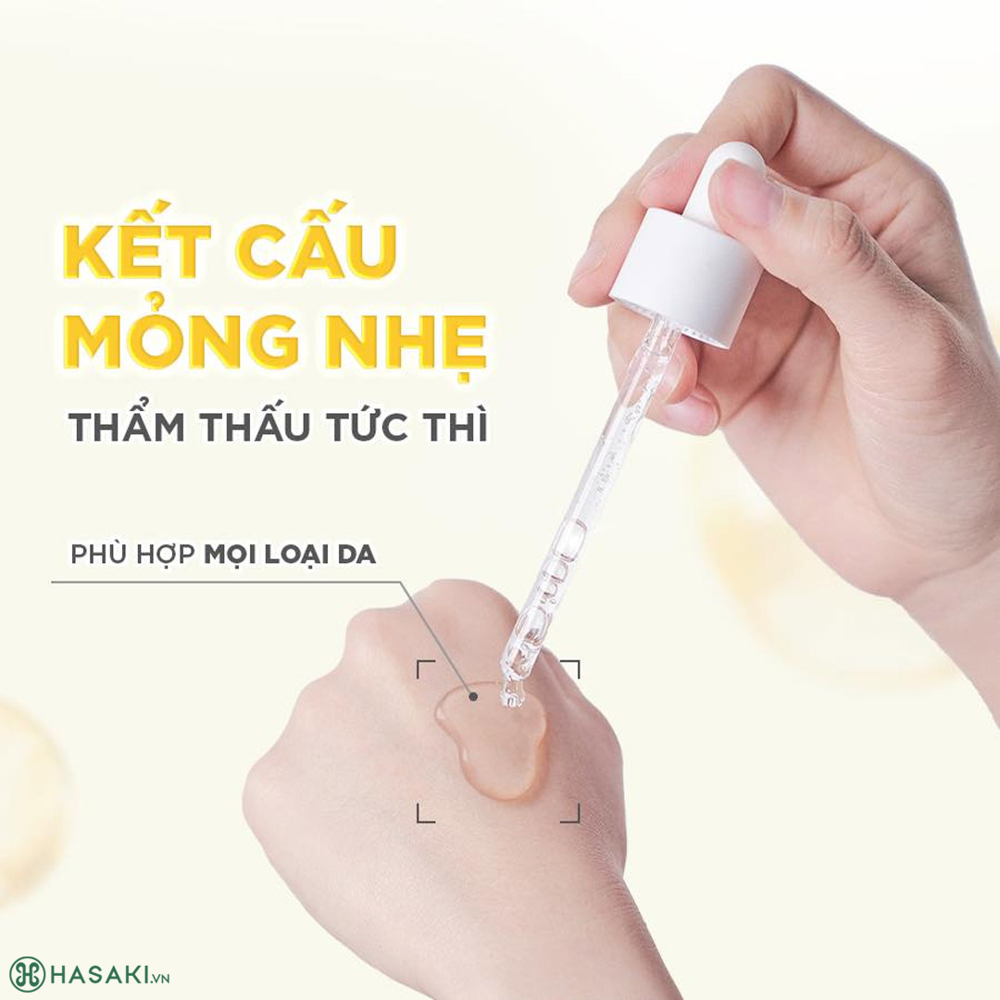

215.000 ₫
Giá thị trường: 475.000 ₫ - Tiết kiệm: 260.000 ₫ (55%)
Dung tích: 55ml
Bạn muốn nhận hàng trước 17h hôm nay (Miễn phí). Đặt hàng trong 50 phút tới và chọn giao hàng 2H ở bước thanh toán.


Serum Skin1004 Madagascar Centella Ampoule phù hợp với loại da nào?
Ưu điểm nổi bật:
| Barcode | 8809576260601 |
| Thương Hiệu | Skin1004 |
| Xuất xứ thương hiệu | Hàn Quốc |
| Nơi sản xuất | Hàn Quốc |
| Loại da | Da nhạy cảm |
| Dung tích | 55ml |
| Đặc tính | Làm dịu và phục hồi da |
Hotline: 0845628919
(Miễn phí 08-22h kể cả T7, CN)
Hướng dẫn đặt hàng
Phương thức thanh toán
Chính sách đổi trả
DANH MỤC SẢN PHẨM
Mỹ phẩm High-End
Chăm sóc cá nhân
Băng vệ sinh
Khử mùi
Nước hoa
Nước hoa nữ
Nước hoa nam